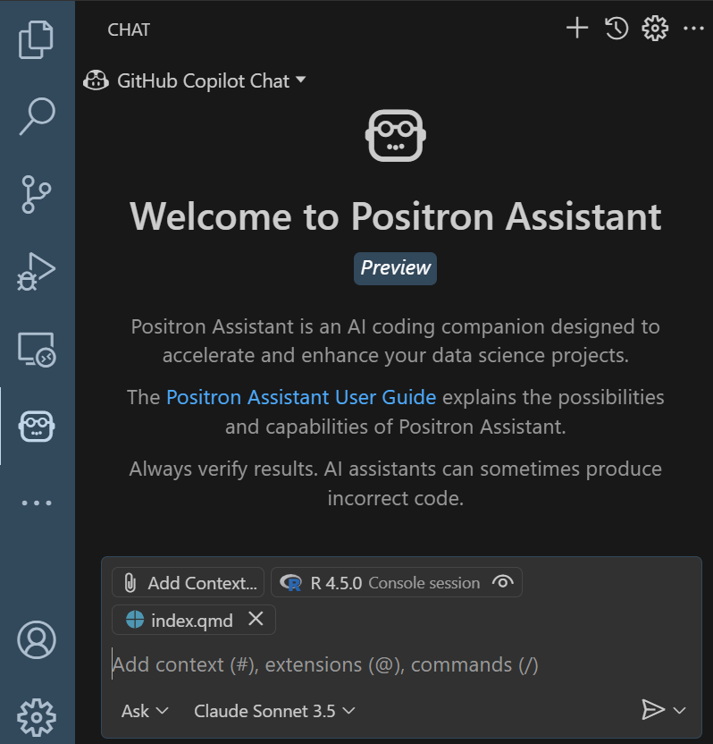
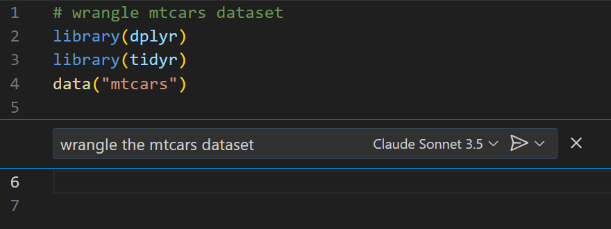
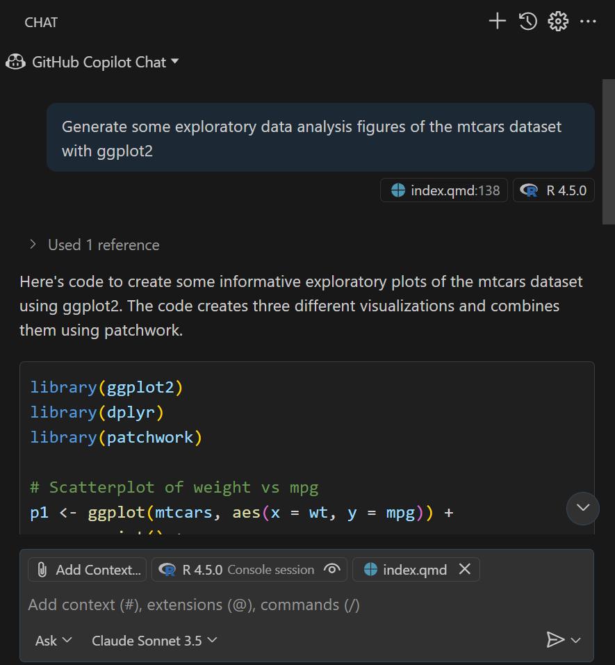
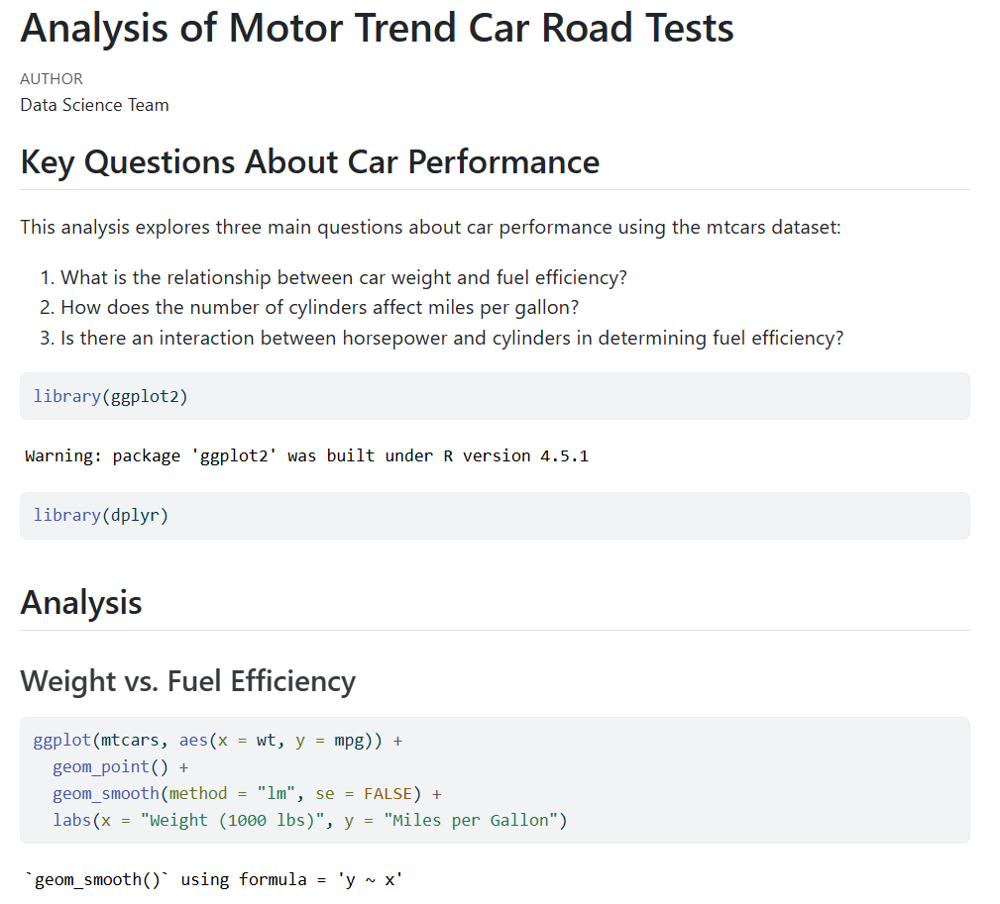

library(ggplot2)
library(dplyr)
# Create visualization of relationships between mpg and key variables
p1 <- ggplot(mtcars, aes(x = wt, y = mpg)) +
geom_point() +
geom_smooth(method = "lm", se = FALSE) +
labs(title = "MPG vs Weight", x = "Weight (1000 lbs)", y = "Miles per Gallon")
p2 <- ggplot(mtcars, aes(x = factor(cyl), y = mpg)) +
geom_boxplot(fill = "lightblue") +
labs(
title = "MPG by Cylinder Count",
x = "Number of Cylinders",
y = "Miles per Gallon"
)
p3 <- ggplot(mtcars, aes(x = hp, y = mpg, color = factor(cyl))) +
geom_point() +
labs(
title = "MPG vs Horsepower by Cylinders",
x = "Horsepower",
y = "Miles per Gallon",
color = "Cylinders"
)
# Arrange plots in a grid
library(patchwork)
p1 +
p2 +
p3 +
plot_layout(ncol = 2) +
plot_annotation(
title = "Fuel Efficiency Relationships in mtcars Dataset"
)An Introduction to Positron Assistant
LLM
Coding more efficiently with LLMs in your IDE
I was pretty slow to migrate over to Positron, Posit’s new integrated development environment (IDE). Researchers and academics aren’t always the first to hop on emerging tools and products… or even the second. My attachment to RStudio’s classic and reliable graphical user interface (GUI) kept me skeptical about breaking the status quo of my workflow. Why fix something if it’s not broken? After a curious introduction to the new software, I am more than stoked I made the switch as it has a lot more to offer R users than just Python integration.
I was so inspired by my (initially reluctant) switch to Positron that I decided to write up this blog post to convince fellow data scientists and analysts why it is worthwhile to checkout. Positron offers many features that give it a leg up over its older sibling, RStudio. It is tailored specifically to the needs of data scientists and analysts, providing us with what we need, where we need it. I won’t go into detail on all of its bells and whistles in this blog, but I will mention a few of the key features that stood out to me:
- Improved data frame/variable exploration (interactive filtering, sorting, etc.)
- Better point-and-click integration with GitHub commands
- Aesthetic source control and commit history layout
- Multi-language support (R, Python, etc.)
I could go on and on about this, but that is not what this post is about. It is about the one feature that drew me in like a moth to a flame. The one feature that showed me how my day to day was about to drastically change. It is about Positron Assistant.
Positron Assistant

Positron Assistant is “an AI client that provides LLM integration within Positron, both for chat and for inline completions.” - Posit. It is Posit’s native AI coding assistant that can be powered by either Anthropic Claude models or various other large language models (LLMs) supported in GitHub Copilot (as of 10-30-2025). But why is Positron Assistant any better for us compared to web interface chats? Code completion and LLM chatbots are not new concepts after all.
The key is that Positron Assistant brings LLM chats directly into the IDE, which reduces the friction of copy-paste and also incorporates your code base and environment context (files, variables, data frames, system version, etc.) into its understanding of your requests, giving you more accurate results. More importantly, it can function as an AI Agent, meaning it can perform tasks on behalf of the user by executing code and iterating over errors to give you the best results. It is honestly a bit scary.
Install and Enable
You will need either an API key from Anthropic (paid) or a GitHub account (free tier available) to use Positron Assistant. GitHub Copilot has both code completion and chat modes available while Anthropic Claude currently only has chat. I use GtHub Copilot in this demonstration.
Functionalities
Positron Assistant offers two different main functionalities - chat and code completion. Chat is the core functionality that allows you to ask questions and talk to the LLM (either in the chat pane or inline). It is similar to how you would interact with an LLM web interface, but it is integrated into Positron. It has 3 different modes provides: Ask, Edit, and Agent which have different functionalities. Code completion suggests code and annotations for you as you are typing them out. It is basically an autocomplete for code that tries to finish your lines for you.
Chat
Ask: Use this mode to ask questions, get help with debugging, or request code generation. This is the default mode when you open the chat.
Edit: Use this mode to make code changes with the model’s help. The model will suggest code changes based on your prompts, and you can apply those changes to your code.
Agent: Use this mode if you’d like Positron Assistant to determine the steps needed for your request and autonomously carry out the work. On your behalf, Positron Assistant can execute code in the Console, create and modify files, and identify the next steps based on the results of the previous steps.
Click on the Positron Assistant icon in the left-hand side Activity Bar to open the chat pane, or run Ctrl + I / Cmd + I in a script for inline chat.


Tip
You can provide Chat mode with additional context (files, variables, R session, etc.) by clicking on the
Code completion
GitHub Copilot currently supports code completion which suggests code and annotation to be autocompleted. Start a line of code and it will automatically suggest completions that you can accept or reject by pressing tab to accept or keep typing to ignore.

Examples
Code completion is relatively straight forward and automatic, but the three different chat modes can seem a little bit confusing without seeing them in action. Let’s look at how to use each of the chat modes.
Ask
Ask mode is intended to be used to generate code, answer questions, and help debug. It is the most generally applicable mode and a good place to start. I wanted to see if it could write some code on the popular mtcars R data set:
“Generate some exploratory data analysis figures of the mtcars dataset with ggplot2”
It responded with some nice R code which I could run directly in the chat before adding into my R script. It included a few different plots that were saved as variables and stitched together to make a {patchwork} plot shown in the Plots pane.

Here is the code it generated, which can be easily transferred into your script or notebook:
Tip
If you are asking an R Shiny specific question, start your message with @Shiny to leverage Positron Assitant’s Shiny chat participant, which is fine tuned for all things Shiny.
So far so good! I gave it a well known R dataset and an easy task. I also could have done this in ChatGPT for free (although without the additional context files) and copied and pasted it into my code too though, so it isn’t a home run yet.
Edit
Let’s say I wanted to change the boxplot fill color to green instead. It would also be nice if the final ggplot2 object could be saved as its own value and exported as a PNG. We could use Ask mode to do this, but Ask mode can be a little general at times and focuses more on initial code generation and big picture questions. Because we are trying to fix a small, specific piece of a code already generated, it would be more appropriate to use the Edit mode to get more desirable results. Edit mode focuses on making acute changes to code already in the code base.
Let’s try the following prompt in Edit mode:
“Write me code that will change the boxplot fill color to green and save the final plot as a PNG file named mtcars_eda.png.”
The nice this about the results in Edit mode is that it only showed me the pieces of code it modified. The results appear to be more focused on the specific changes and less on the general structure like what you get in Ask mode.
# Change boxplot fill color to green
p2 <- ggplot(mtcars, aes(x = factor(cyl), y = mpg)) +
geom_boxplot(fill = "green") +
labs(
title = "MPG by Cylinder Count",
x = "Number of Cylinders",
y = "Miles per Gallon"
)
# Create and save the combined plot
combined_plot <- p1 +
p2 +
p3 +
plot_layout(ncol = 2) +
plot_annotation(title = "Fuel Efficiency Relationships in mtcars Dataset")
# Save as PNG
ggsave("mtcars_eda.png", combined_plot, width = 12, height = 8)It successfully gave me only the code I needed to change the color and save a PNG to my working directory like I asked it to. Similarly to Ask mode, I could have also done this in ChatGPT for free. However, the advantage here is that it has the additional context of my R environment, and I don’t need to copy and paste code back and forth to a website, which gives me more accurate results. Let’s take a look at where the real power of Positron Assistant shines.
Agent
Finally for the scary part… Agent mode essentially lets Positron Assistant take over your IDE and perform tasks autonomously upon your approval. It acts like a highly efficient coworker who will carry out tasks you ask it to and take steps it sees as necessary to get you the results. It feels really weird and risky to let it take the reigns like that, but let’s try it out anyway. I gave it the following prompt which is more specific and complex than the previous two:
“Make a short quarto report asking some questions about the data that provides figures and a conclusion. Render it and name it mtcars_report.qmd”
It then responded:
“I’ll create a Quarto report that explores some key questions about the mtcars dataset. Here’s the content:”
I then watched it generate appropriate code and text inside a file called mtcars_analysis.qmd that it created. To be fair, it asked me the following prior:
“I’ll create a new task to save this as ‘mtcars_report.qmd’ and render it. You can then open the rendered HTML file to view the complete report. Would you like me to save this file and render it for you?”
After I gave it the thumbs up, it created the quarto file in my working directory and rendered it as an HTML file.

Pretty impressive, right? The agent fully took the necessary actions to create a quarto document, execute code, and render the final report without any intervention besides asking if I would like it to continue. Agent mode can be used in many different ways to automate repetitive tasks and carry out grunt work on the back burner. It is very powerful and will greatly change how we work with data.
Final thoughts
It is critical to note that Positron and the LLM’s it relies on are not perfect. They hallucinate, make simple errors, and can take a lot of iteration to yield the results you want. That is why adding context and being as specific as possible in your requests is crucial. I kept things simple and broad in this demonstration, but you will get much better results if you provide more context and details. One way to do this is to create a .txt file in your directory that gives specific instructions to Positron Assistant on how you want it to behave. You can then attach this file as context to your chat.
Overall, I am feeling both excited and conflicted about the integration of LLMs into IDEs like Positron Assistant. They are remarkably powerful tools that can greatly increase efficiency and productivity, especially for repetitive tasks. You can generate and debug code quickly, carry out time intensive tasks in Agent mode, and gain new insights into improving your analytical pipelines.
However, I do see these tools pushing us towards becoming vibecoders where we end up relying heavily on LLMs to execute our work. So much of the learning and joy as an analyst comes from looking deep on Stack Overflow and GitHub for solutions. It teaches you how to think like a programmer, and I am afraid that reliance on these chatbots like Positron Assistant will change the way we work. I think that we just have to move cautiously and be intentional about how we integrate these tools into our day to day.
Databot

Databot is an experimental feature of Positron Assistant that specializes in data analysis tasks such as data cleaning, visualization, and exploration. I see it as a more specialized assistant that helps you crack open you data to get more insights faster. While Positron Assitant can also do this for us as we just saw, databot would be more thorough in data exploration tasks. I encourage you to try it out if you have a paid Anthropic API key as is highly rewarding. It functions quite similar to the Positron Assistant chat, so I chose to exclude a demonstration here for brevity.
Installation
Make sure you have Positron Assistant enabled to use Databot. Install Databot by choosing the Extension view from the activity bar on the left. Search for Databot and install it. Once installed, open the settings icon and acknowledge Databot: Research Preview Acknowldgement. Read more about Databot here.
Citation
BibTeX citation:
@online{hunter2025,
author = {Hunter, Raymond},
title = {Thoughts on {Positron} {Assistant}},
date = {2025-10-30},
url = {For attribution, please cite this work as:
Hunter, Raymond. 2025. “Thoughts on Positron Assistant.”
October 30, 2025. <https://ramhunte.github.io/blogs/positron_assistant/.